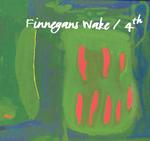

| Artist: | Finnegans Wake |
| Title: | 4th |
| Label: | Carbon 7 C7-071/072 |
| Length(s): | 45+49 minutes |
| Year(s) of release: | 2005 |
| Month of review: | [09/2005] |
| 1) | The Voyage Of Maeldun | 8.09 |
| 2) | Back On | 9.27 |
| 3) | Fata Morgana | 12.34 |
| 4) | Olinda | 2.46 |
| 5) | Mercurial | 6.15 |
| 6) | Tapioca Com Pimenta | 6.13 |
Disc 2:
| 1) | Moondogging | 11.32 |
| 2) | Anemia | 6.08 |
| 3) | Brasil, RN | 11.22 |
| 4) | Wenceslas Shorts | 3.16 |
| 5) | Datcha | 6.45 |
| 6) | Morituri Te Salutant | 7.05 |
| 7) | Bon Voyage | 3.12 |
Back On is slow and noisy, dominated by the guitar and accompanied by some sinister keyboards. Some wind instrument adds to the somber style, similar to the music of Karda Estra. Then the music becomes a bit more lighthearted as more instruments are added. But then the music bursts loose again, turning into heavy prog with a noisy electric guitar taking the lead again. At the end, we get a meandering organ solo.
Fata Morgana is the longest track on this entire double album, an amalgam of a chamber orchestra, dominated by violin, with a slightly distorted electric guitar. The sax sounds a bit wavery and Middle-Eastern styled. Later, the music reverts back to what I can only call plain chamber orchstra style music: there is no rock at all, only violin, cello and the like playing short phrases repetitively. To me it sounds too much like loose sand here. Later, the string instruments get the company of some wind instruments, and a piano as well. The violin sounds more gypsy like here. Organ and electric guitar finally lend more power to the music, but not for very long. As such, this song alternates between the various classical ingredients and a few more rock styled elements. But the neo-classical aspects do tend to dominate, and I do not find these parts as likable as I do the parts where the traditional rock instruments enter the picture.
Olinda on the other hand, is a relative short piece opening with strumming on the acoustic guitar, later turning to more controlled playing, but none of the other instruments come in. With Mercurial we enter the realm of modern Hollywood soundtracks in the vein of Elfman, but with quite a bit less bombast. this is to say: the mood is dark and sinister. There are similarities to the music of Karda Estra again, mainly because of the dominance of the wind instruments and the overall dark warm mood. At the end, the track speeds up, becoming a bit more manic.
Tapioca Com Pimenta makes an end to the first disc. The first part of this track consists of a repetitively played phrase on piano, getting more and more subdued along the way. Then a crunchy guitar sets in in full. Then the pace goes as we slip into overdrive. The organ throws in its two cents and we have come to a Tone Center style freak-out piece in which the drummer bangs away monotonously. Slowly the music dies down, a sign that the flute may come in for some melodious play. The guitar then sets in, playing a similar theme alongside. This is a rather tense passage, plodding and threatening. When the pace sets in again, the effect is one of a dark kind of hard rock.
Disc two then. Moondogging opens this disc, and it turns out that it even has a kind of wordless vocals. The classical elements are back in full again, the pace if slow and the feel melancholy and a bit dreary even. The first half reminds me of Karda Estra, the second half is more up-beat with what seems to be programmed percussion giving rise later to the electric guitar. This part may be likened to After Crying. Anemia is a quiet opener, a bit stately with the easy going acoustic guitar and wind instruments lining with melodic phrases. The overall feel is a bit Arabic. It is followed by a darker passage, in whcih the tension rises, but in a subdued fashion. We then enter the third part of the song, again a bit more subdued. Only towards the end does the percussion and finally the electric guitar set in. The final melodic ending reminds me strongly of After Crying again.
Brasil, RN is another long track. Again, the wind instruments make for a somewhat Arabic feel, melodywise. This time, the drums play along immediately. The music is strongly orchestrated, and as I often find on these discs, beautiful but static. At about a third down the track, the guitar sets in for some nice tension building. The violin and cello line this part well with repetitive phrases that add to the menace. In the middle, the music dies down somewhat, but the tension does not die down.
Wenceslas Shorts is a rather short piece reminiscent of 5UUs. But this one has spoken words, although they are not easy to understand (but you can find them in the digipack so that helps). A rather weird tune this, a bit carnival like. Datcha opens in jazzy style, but turns out to be one of the heavier and appealing tracks on this disc. The classical instruments work really well with the drone of the rhythm guitar and there is an inordinate amount of menace and a bit of fire too. Very good.
It seems that now we are approaching the end of the disc, Finnegans Wake is shedding its shyness and comes alive. Morituri Te Salutant opens with a heavy dose of keyboards. The middle part is quiet again, but the end sees a few more outbursts. Bon Voyage is the New Wavey closer with somber vocals, only slightly sung. The organ is the lead instrument here, and notwithstanding the dark feel, there is a certain lightness to it.